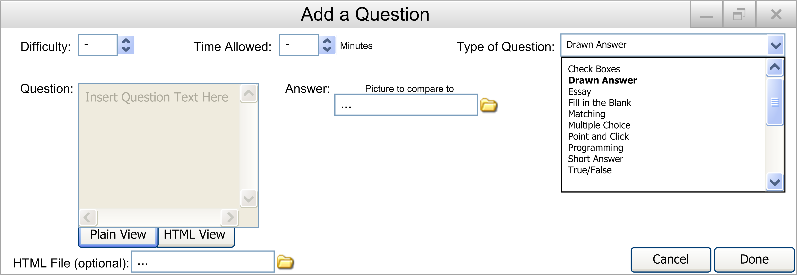
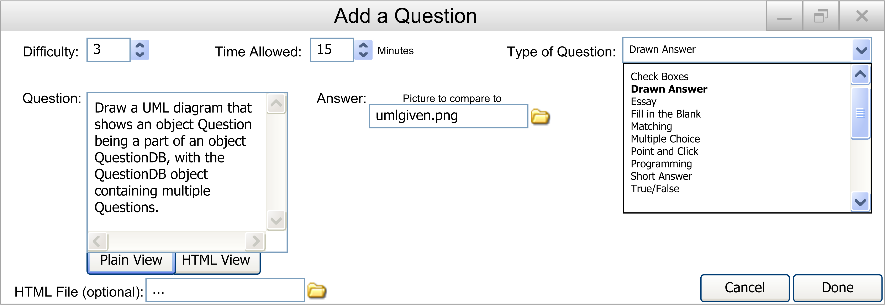
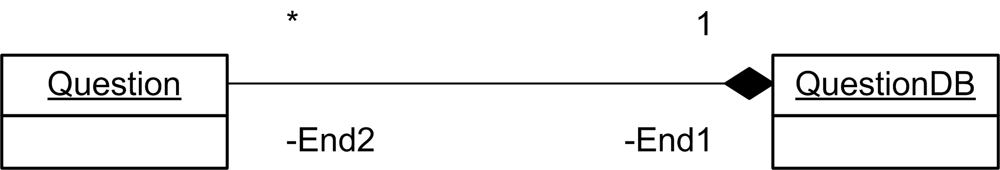

When the user wants to add a drawn answer question to the database, they select the Add Question item in the Edit submenu under Database in the main menu.
The following window is displayed, as shown in Figure 2.2.2.2.1.

Figure 2.2.2.2.1: Add Question to Database Screen
They should then select the Drawn Answer item under the Type of Question pulldown menu. Then the following will appear and should be filled out by the user:
- Difficulty: The difficulty of the question, from 1 to 5. A number can be entered in the box, or the up and down arrows can be used to adjust the number.
- Time Allowed: The time allowed for the question in minutes. A number can be entered in the box, with any value. A time of 0 will give the student unlimited time to answer the question.
- Type of Question: A drop down menu containing all of the possible question types.
- Question: The text of the question.
- Answer: The answer to the question, in picture form. The test taker's answer will be compared to this given picture (how this is graded is to be determined).
- HTML File: The optional attached HTML file to replace the question. This allows for images, videos, etc. to be put into the questions. By clicking the link icon to the right of the text box, the user can browse for a file located on their computer.
There are also two buttons on the bottom right:
- Cancel: When the user presses this button, the user is returned to the main database screen, and no question will have been added.
- Done: When the user presses this button, the question will be put into the database as described. The user will then be returned to the main database screen
Figure 2.2.2.2.2 is an example of a completely filled in Add Question screen, and Figure 2.2.2.2.3 shows the picture that has been put as the answer.

Figure 2.2.2.2.2: Completed in Add a Question Screen

Figure 2.2.2.2.3: umlgiven.png from Figure 2.2.2.2.2's answer field